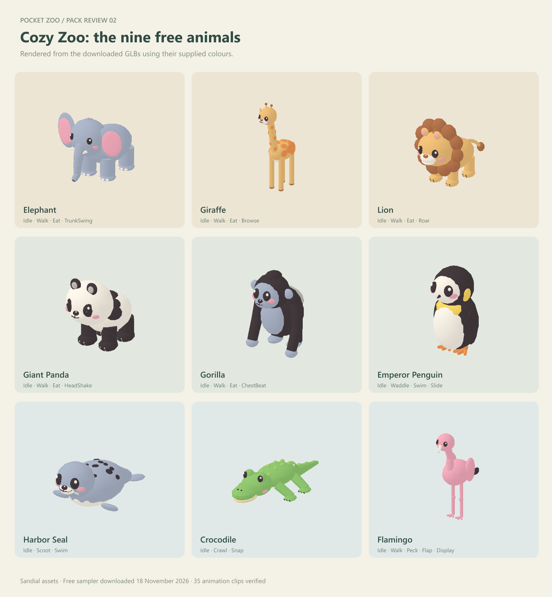
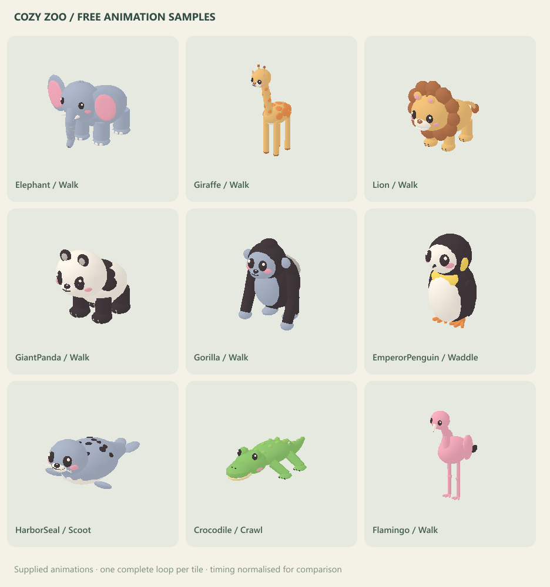
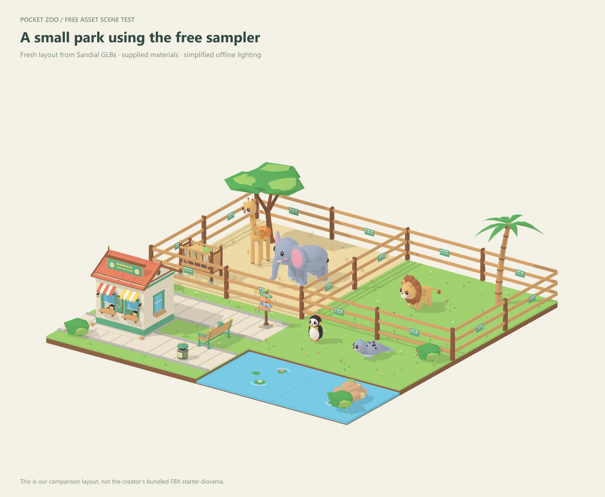
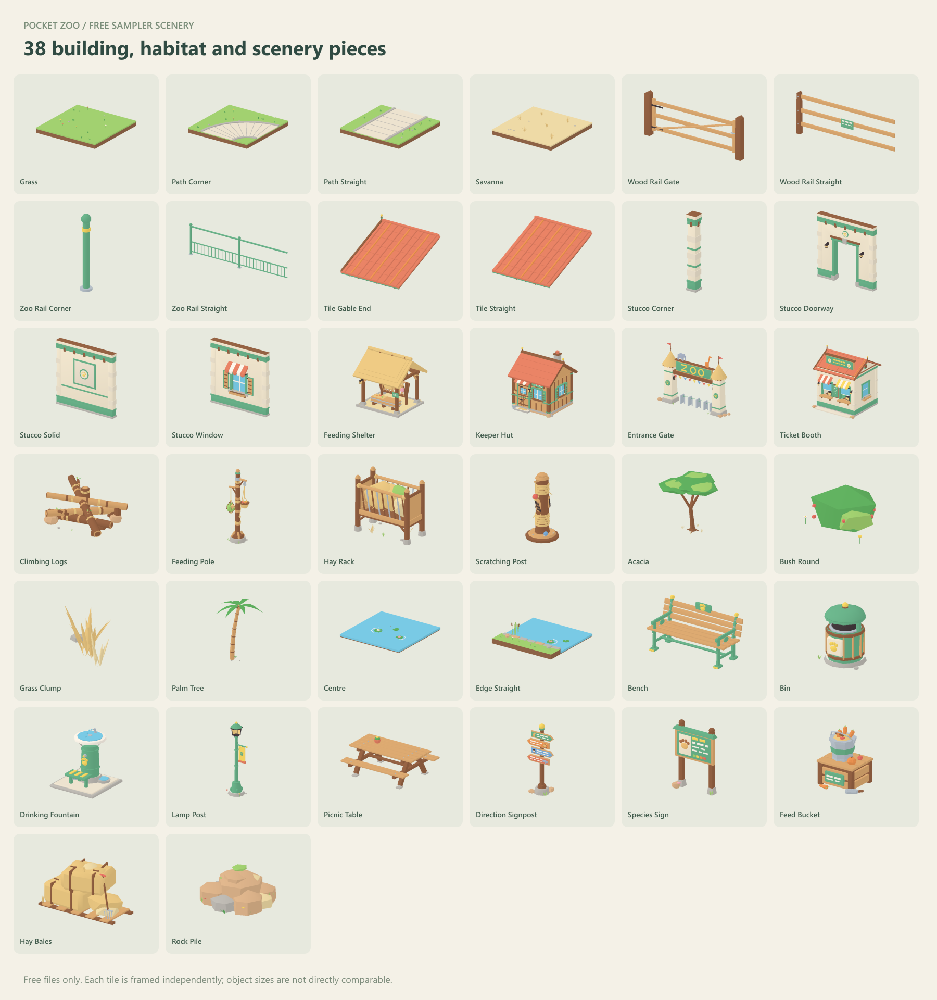

Cozy Zoo: the actual free sampler.
47 assets, nine animated animal species and 35 clips. These previews were rendered from the downloaded files, with the supplied colour materials and simplified offline lighting.
The download differs from the store description: it includes a giant panda, gorilla, seal and crocodile. It does not contain the advertised red panda, macaw, tortoise or train.



This layout was assembled for our comparison. The archive also contains the creator's starter diorama and three assembled prefabs in FBX format. Those supplied FBX scenes have not been rendered here.

All 47 GLBs loaded successfully. Bone movement and loop continuity were checked for every supplied clip. Triangle counts range from 188 to 9,960 per asset. Mobile runtime performance has not been measured.